Кто в кадре
Владимир в образе Нигана: чёрная косуха, бордовый шарф, бита Люсиль с колючкой. Рядом Ботя, старый ЭЛТ-монитор с синей изолентой. Ниган объясняет, Ботя спорит и врёт уверенным голосом.
Чтобы герой выглядел одинаково в сотне кадров, у каждого есть паспорт: 24 эмоции у Нигана, 32 у Боти. Нейросеть получает не «нарисуй злого мужика», а конкретную карточку «прищурился, знал заранее».
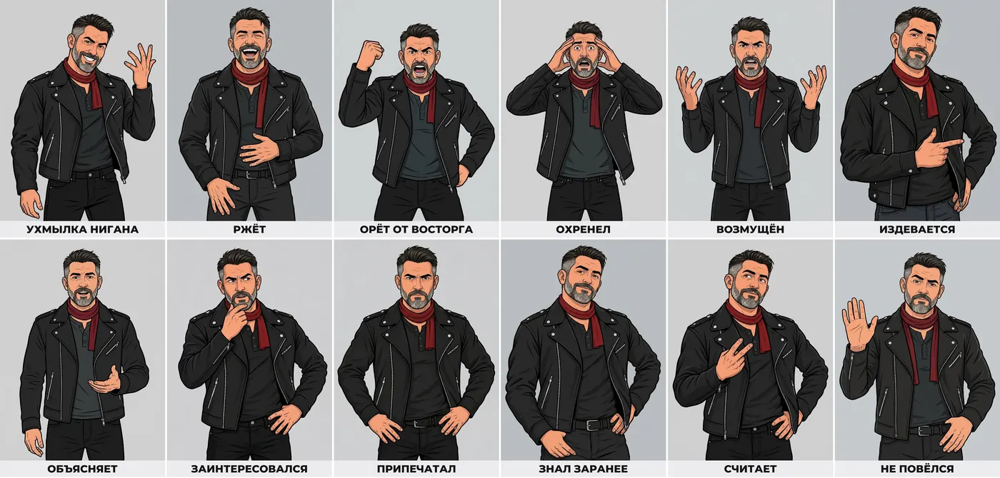
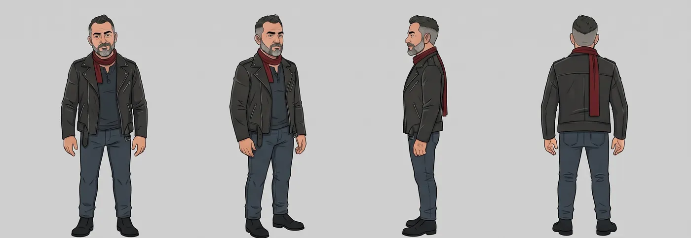
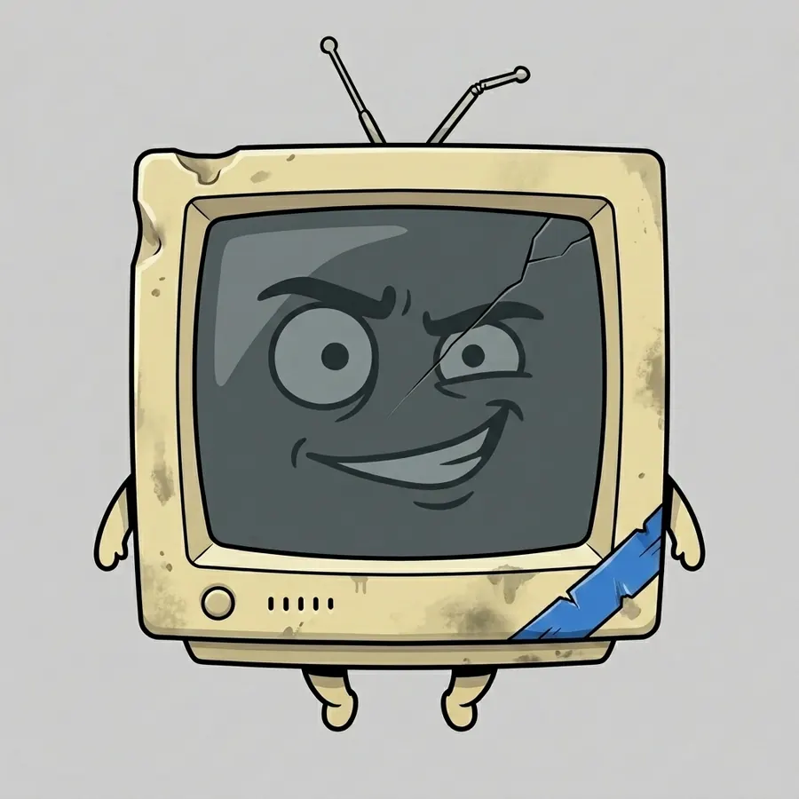
Мои 32 эмоции рисовали дольше, чем его 24. Я сложный.
Сначала разведка
Первый ролик сняли после того, как пересмотрели почти полторы тысячи чужих. Скрипты сами собирают ленты, качают ролики, режут на кадры и делают расшифровки.
- 1454ролика русской ниши про нейросети собрали и прогнали через фильтр, 550 оставили
- 421рилс про бизнес-темы и 51 расшифровка, чтобы выбрать нишу
- 100роликов одного сильного автора разложили на листы кадров
- 50роликов продюсера с медианой 13 тыс. просмотров разобрали по приёмам
- 60англоязычных разборов: 30 авторов по 2 ролика
- 3800кадров покадрового разбора 20 роликов ниши
- 256своих старых статей с Дзена, чтобы ролики говорили голосом автора, а не нейросети
- 72автора в утреннем радаре тем, обновляется каждый день
Что именно нашли, тут не написано. Рецепт у повара, на кухню пустили посмотреть.
Как собирается ролик
Девять шагов от темы до публикации. Почти всё делают скрипты и нейросети, человек выбирает и бракует.
-
Тема
В 07:00 радар просматривает свежие ролики 72 авторов и предлагает кандидатов на 4 слота дня. В 10:00 в Телеграме приходит список, тема выбирается кнопкой «беру».
Scrape CreatorsInstagram, TikTok, YouTubeVK APIfaster-whisperрасшифровкиyt-dlp -
Сценарий
Пишет Claude, по очереди в семи ролях: разведчик, драматург, диалогист, автор хука, тупой зритель, критик, раскадровщик. Сверху лежат 44 правила голоса автора и 35 правил, каждое из которых стоило одного переделанного ролика.
Claudeсвод правил голосаправила сценария -
Тупой зритель
Отдельный агент читает сценарий как человек, который ничего не знает о нейросетях, и отмечает, где он потерялся. Пока он путается, кадры не рисуются. Было 15 таких прогонов, в одном ролике до 11 подряд.
-
Согласование
Сценарий приходит в Телеграм страницей: реплики, роль каждой фразы, график «качелей» по эмоциям. К любой реплике можно оставить комментарий и одной кнопкой скопировать все правки обратно. Новая версия собирается новым файлом, старые не затираются.
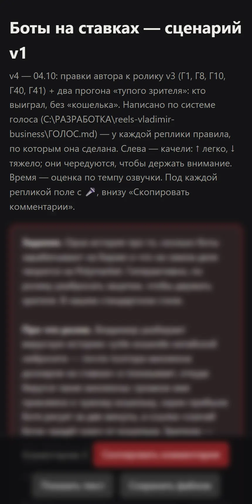
Сценарий с комментариями 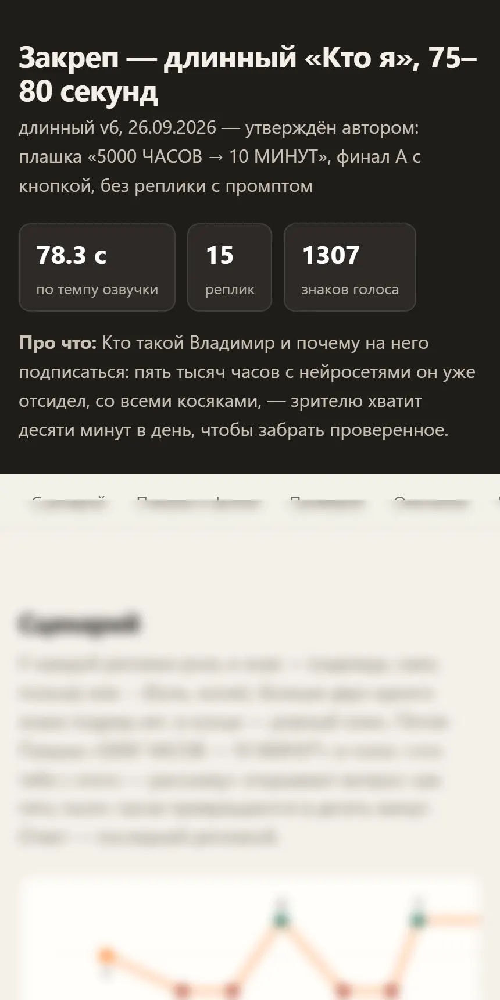
Хронометраж и качели -
Кадры
Картинки рисует Nano Banana 2 через шлюз KIE.AI, один кадр 2K стоит около 3 центов. Каждый кадр проверяется по чеклисту примерно из 130 пунктов: рука Боти не превратилась в шланг, на задней крышке монитора нет чужих надписей.
Nano Banana 2KIE.AIодин ключ на все моделипробовали GPT Image, Flux, Seedream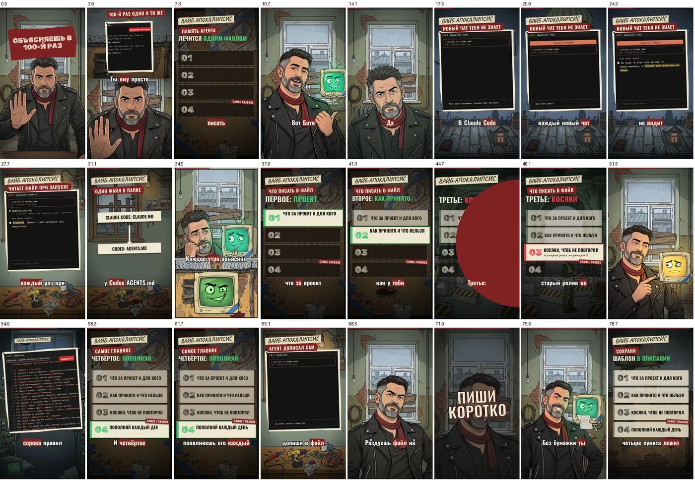
Контактный лист: весь ролик на одном экране перед рендером -
Видео
Живой Ниган снимается в Grok Imagine. До этого сравнили 14 моделей по цене: 50-секундный ролик с запасом на брак стоит от 1,2 доллара у Grok в 480p до 31,5 у Seedance 2.5. Апскейлы пробовали и выкинули, они замыливают фактуру кожи.
Grok ImagineSeedanceVeo 3.1HailuoKlingотказались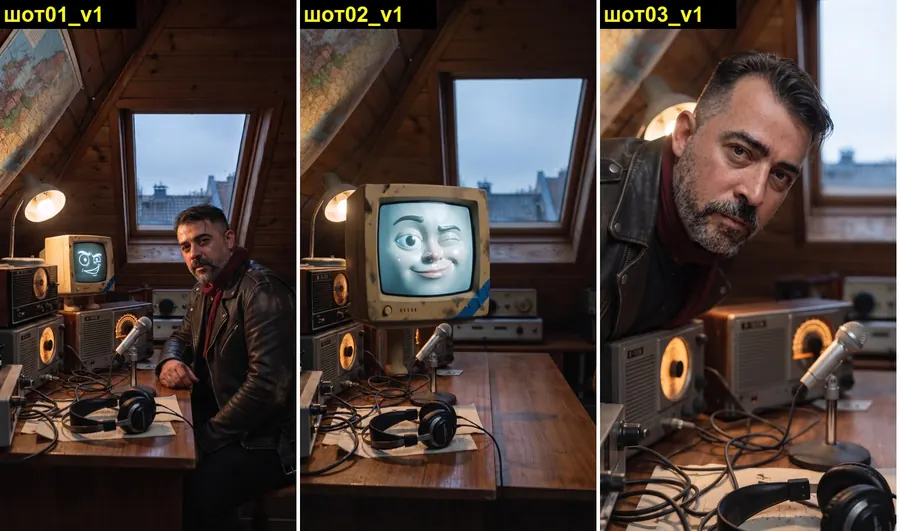
Живой формат: три шота одного ролика Для мультиков и 3D отдельная линия: Blender, Mixamo для движений, Hunyuan3D, Meshy и Tripo для моделей.
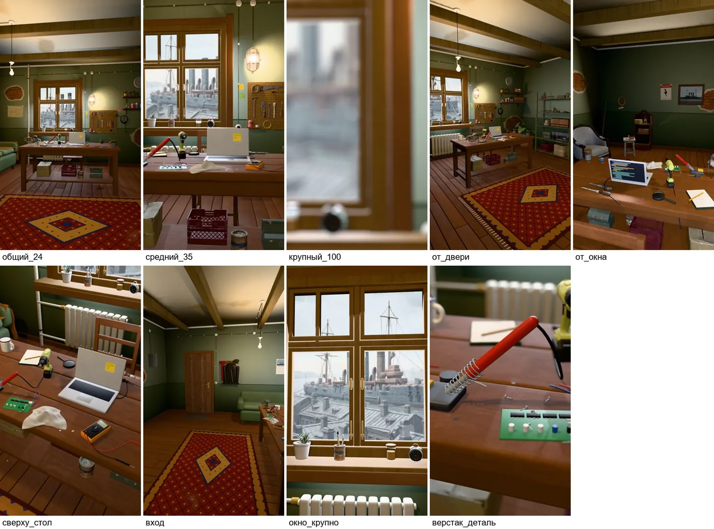
3D-мастерская, 9 ракурсов одной комнаты -
Голос и музыка
Озвучка в Gemini TTS: у Нигана один голос, у Боти другой, реплика стоит доли цента. Начинали с ElevenLabs и клонов голоса. Музыку пишет Suno, длинной сюитой на 6 минут, которую потом режут на куски. Мат запикивает свой скрипт.
Gemini TTSElevenLabsбылоSunoDemucsчистит звук -
Монтаж
Ролик собирается кодом в Remotion: титры, плашки, бита, которая прилетает и бьёт по ключевому слову. ffmpeg режет, OpenCV ищет склейки и лица в кадре. На приёмке скрипт меряет громкость (−14 LUFS) и пики, а потом собирает контактный лист.
RemotionffmpegOpenCVскрипт приёмки -
Выкладка
Instagram через своё приложение Meta и Graph API, Телеграм через бота, ВК через робота в браузере. TikTok руками с телефона. За 20 минут до выхода бот спрашивает, выпускать ли.
Instagram Graph APITelegram Bot APIPlaywrightдля ВКПланировщик Windows
Бот с кнопками
Ролик ставится в очередь, а за 20 минут до выхода в Телеграм приходит карточка. Три кнопки. Если молчать, ролик выходит сам. Опоздал с ответом меньше чем на час, выходит сразу; больше, бот переспрашивает.
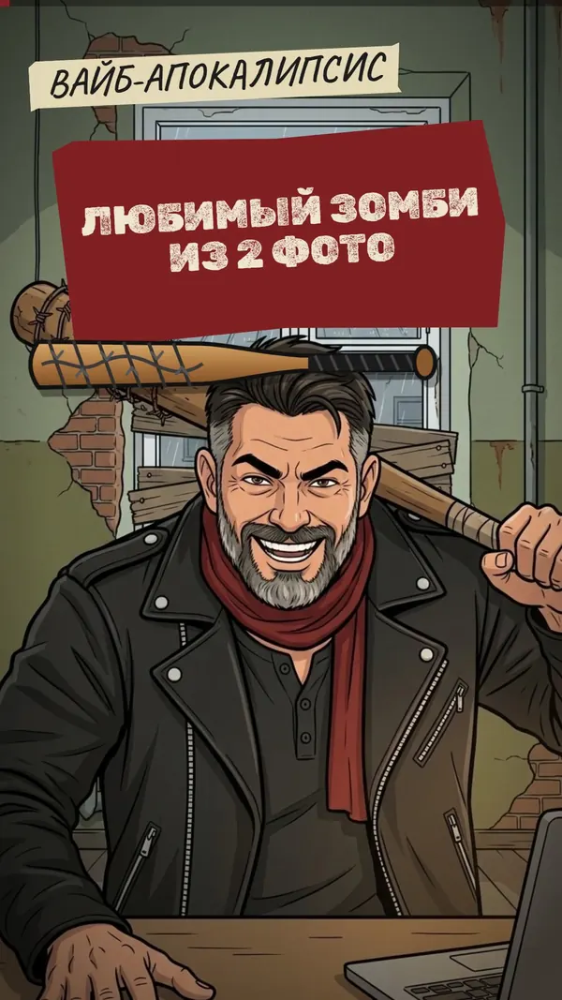
Через 20 минут выходит «Любимый зомби из 2 фото».Instagram, Телеграм, ВК. 18:00.
По журналу бота: 65 событий, 8 раз ролик сняли с выхода, 7 раз перенесли. Перед запуском бота прогнали 29 сценариев дня в симуляции.
Кладбище версий
Сценарий с первого раза не проходит никогда. Обычно 3–5 версий, каждая новым файлом.
«Сделай вирусно»
Рекорд. На августовском отсмотре его забраковали целиком.
Посты канала
Девятнадцать заходов на тексты для Телеграма.
Закреп «Кто я»
Самый просматриваемый ролик в Instagram.
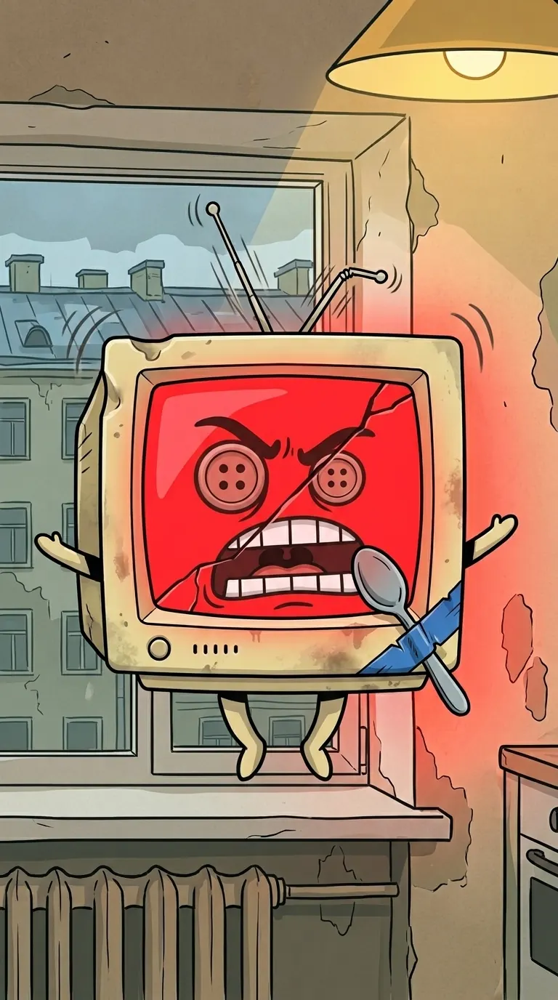
Ложка вместо микрофона
Нейросеть так решила. Такие кадры складываются в журнал факапов: там уже около 196 случаев и 73 кадра брака. Каждый случай превращается в правило, чтобы не повторился.
Ложка была смешнее. Меня не послушали.
Что выходит
31 ролик и 83 публикации в Instagram, Телеграме, ВК и TikTok. Форматы разные: комикс, пластилин, 3D, живой фотореал. Стиль подбирается под тему ролика.
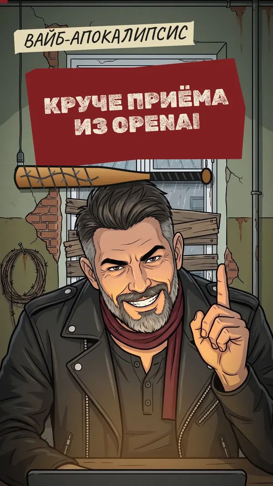
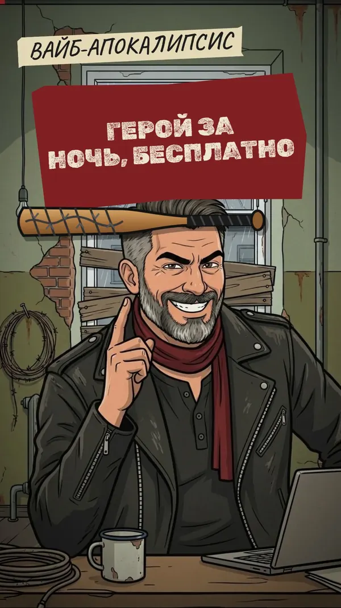
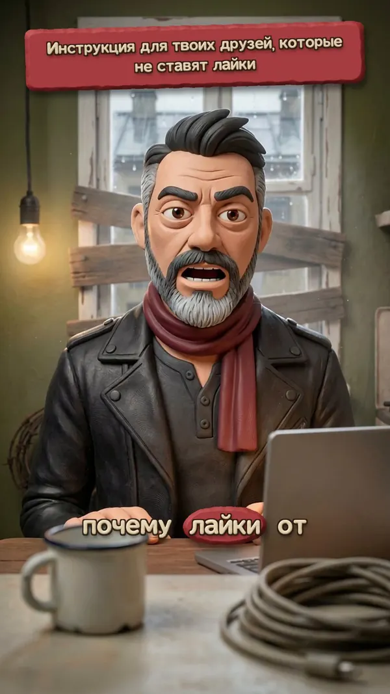
Сколько стоит
Дороже всего время на правки. Генерация обходится дешевле кофе.
Забрать набор
С чего начать самому, без нашей горы скриптов. Хватит браузера и одного ключа.
Первый ролик за выходные
- Придумай героя и сделай ему паспорт: лицо с четырёх сторон и 6–8 эмоций в одном стиле. Дальше все кадры рисуй только с этим паспортом.
- Посмотри 30–50 роликов в своей нише. Выпиши первые фразы тех, что залетели. Это твоя библиотека хуков.
- Сценарий на 30–60 секунд. Первый кадр сразу действие, польза внутри ролика, в конце просьба сохранить.
- Отдай сценарий нейросети с ролью «человек не в теме, где ты потерялся?». Правь, пока не перестанет теряться.
- Кадры в Nano Banana, оживление в Grok Imagine или Seedance, голос в Gemini TTS.
- Монтаж: для старта хватит CapCut. Титры крупно, ключевое слово выделяй цветом.
- Выкладывай каждый день в одно время. Каждую правку записывай как правило «было → стало», чтобы не наступать второй раз.
Сервисы: kie.ai (картинки, видео, голос и музыка по одному ключу), Grok Imagine, Google AI Studio (Gemini TTS), Suno, Claude (сценарии), CapCut.